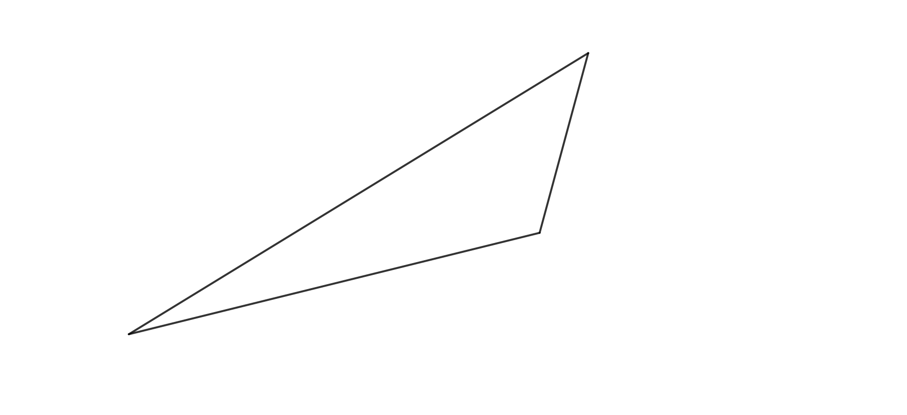
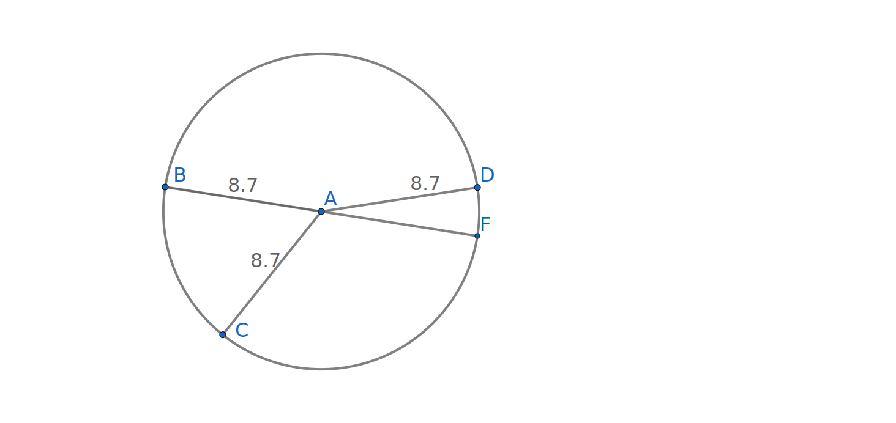
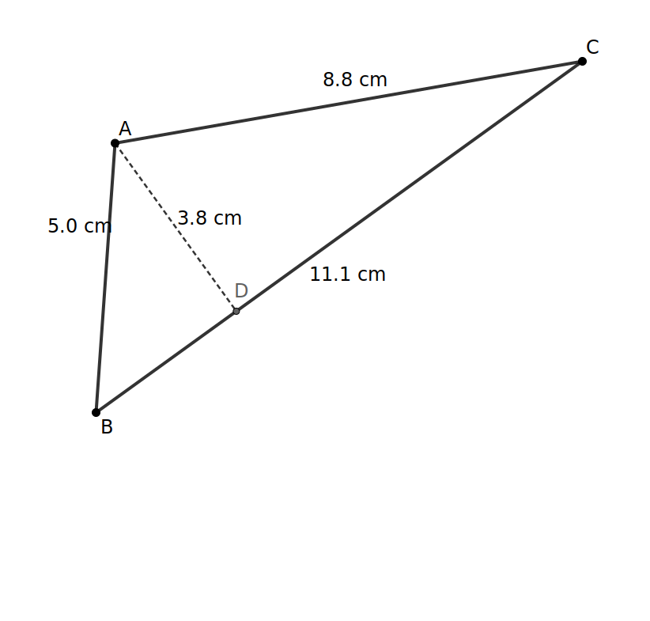
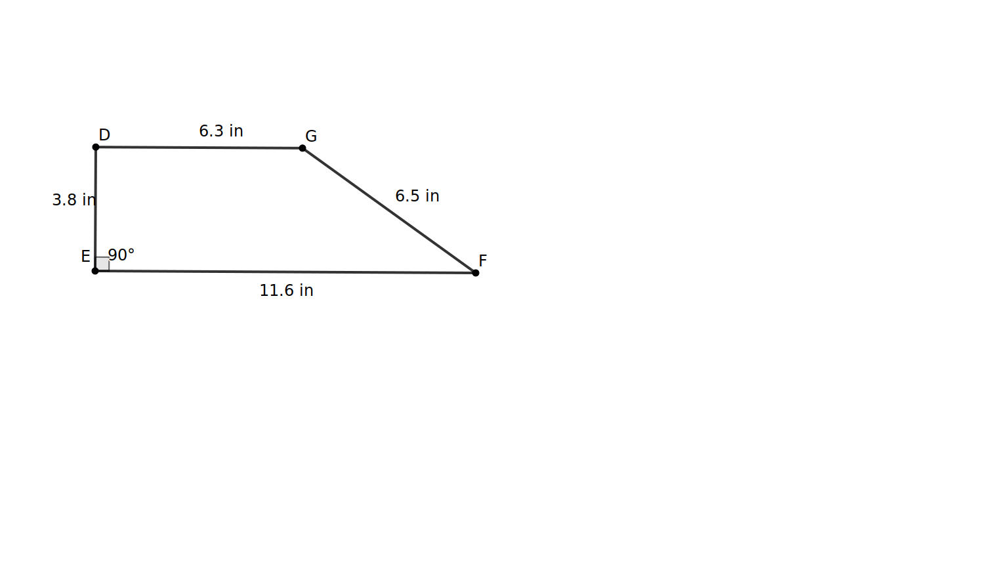
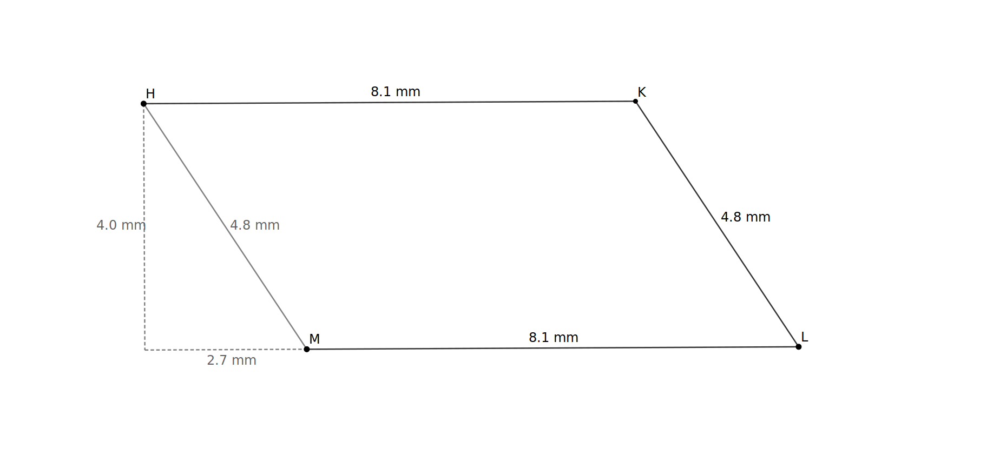
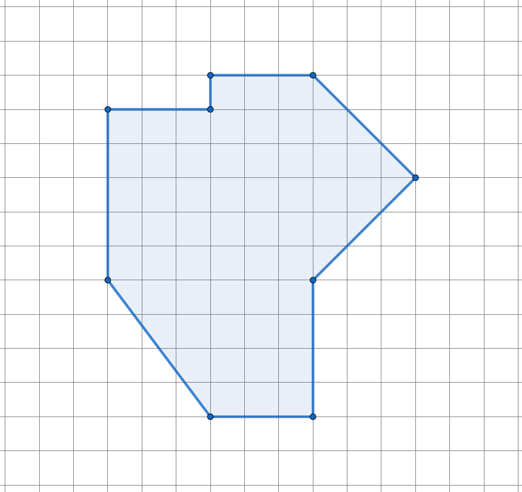
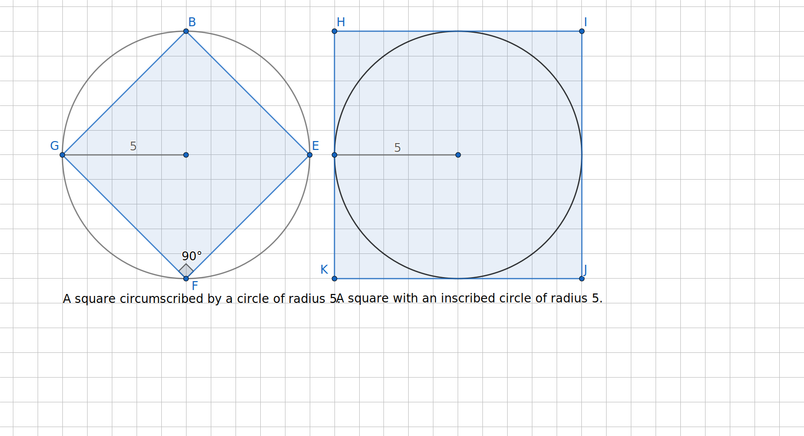
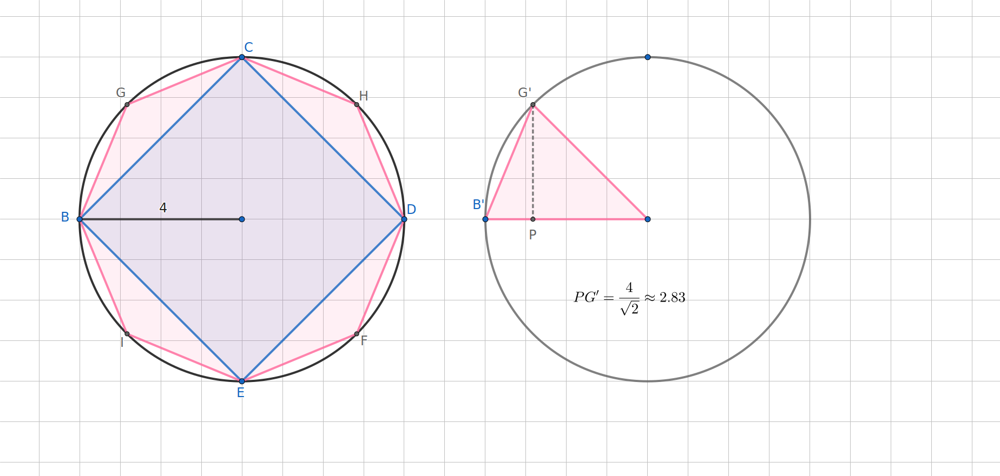

In this section, we will determine the area formulas for three shapes: a parallelogram, a triangle, and a trapezoid. Our goal will be not only to use the formulas but more importantly to be able to explain why they follow from the basic principles of area. In particular, we will use the formula for the area of a rectangle, \(A=\ell\times w\text{,}\) as a starting point to derive additional area formulas.
Subsection2.1.1Area of a Parallelogram
Exploration2.1.1.Discovering an Area Formula for a Parallelogram.
Refer to the definition of parallelogram Definition 1.2.15 as needed to complete the following.
(a)
Sketch the following:
A parallelogram with two different angle measures and two different lengths.
A parallelogram with at least one acute angle and four congruent sides.
A parallelogram with four congruent angles. What do we usually call this parallelogram?
Two parallelograms which share the same side lengths but have different heights.
(b)
Beginning with the parallelogram pictured below or the one you sketched in Item 1 of Task 2.1.1.a, explain and demonstrate how you would construct a rectangle with the same area. You are allowed to cut the parallelogram and rearrange or duplicate pieces as part of your argument.
(c)
Building on the previous problem, derive an area formula for a parallelogram. Use a combination of words and pictures to explain how it comes from the area formula for a rectangle and how you know it must work for all parallelograms.
Hint.
Be sure to label the height \(h\) and base \(b\) in your pictures. These lengths should stay the same throughout your explanation and clarify the relationship between your parallelogram and rectangle.
Now that we know the area formula for parallelograms and why it works, we may add it to our toolbox and use it as well as the area formula for a rectangle in the next exploration.
Subsection2.1.2The Area of a Triangle
Exploration2.1.2.Discovering the Area Formula for a Triangle.
You probably remember the area formula for a triangle; in fact, you may have used it already in this course! But why is the area \(A_{triangle}=\frac{1}{2}bh\text{?}\) This exploration will encourage you to answer that question.
(a)
Triangles come in all shapes and sizes. Sketch one or more examples of the following types of triangles.
An equilateral triangle.
A right isosceles triangle.
An acute triangle that is not equilateral.
An obtuse scalene triangle.
(b)
To demonstrate WHY the formula, \(A_{triangle}=\frac{1}{2}bh\text{,}\) gives the area for any triangle, construct a parallelogram based on the triangle shown below. How is the area of your parallelogram related to the area of the triangle? Explain.

(c)
A friend (or one of your students) asks you why the area formula for a triangle is \(A=\frac{1}{2}bh\text{.}\) Rewrite and elaborate on your answer to the previous task to give a clear, thorough, and cohesive explanation. Be sure to use words and pictures as needed to make the locations of \(b\) and \(h\) clear. The relationship between the triangle and the parallelogram needs to be made explicit as well. Do they have the same height and base? Why or why not? Why must their areas be related and how?
Subsection2.1.3The Area of a Trapezoid
We now have three area formulas in our toolbox:
Table2.1.1.First Three Area Formulas
Shape
Area Formula
Variables
Rectangle
\(A_{rect}=\ell w\)
area \(A\text{,}\) length \(\ell\text{,}\) width \(w\)
Parallelogram
\(A_{par}=bh\)
area \(A\text{,}\) base \(b\text{,}\) height \(h\)
Triangle
\(A_{tri}=\frac{1}{2}bh\)
area \(A\text{,}\) base \(b\text{,}\) height \(h\)
In the next exploration, you will use these three formulas as needed to derive and justify the formula for the area of a trapezoid.
Exploration2.1.3.The Area Formula for a Trapezoid.
Once again, we look at some examples before discovering the formula for area.
This activity may be done using pencil, paper, scissors, and tape. A GeoGebra interactive, Figure 2.1.2, has been provided for those wishing to use it for generating ideas, experimenting, or producing sketches. A 10-minute video, Figure 2.1.9, at the end of this section introduces students to some of the GeoGebra tools.
Sketch example(s) of each of the following trapezoids:
(i)
An isosceles trapezoid.
(ii)
A trapezoid with one right angle.
(iii)
A trapezoid with one acute base angle and one obtuse base angle.
(b)
Be creative as you look for ways to apply our knowledge of the area of parallelograms and triangles to find the area of a trapezoid. There are many good strategies for this problem. Challenge yourself (or your group) to find a method that is different than the methods used by others in your class. Instructions follow:
(i)
Use dissection (cutting), duplication, and/or rearrangement to construct or deconstruct a trapezoid into one or more parallelograms and/or triangles. You may print and use the trapezoid in Figure 2.1.3, draw your own, or use the GeoGebra interactive.
Hint.
You may use rectangles since they are parallelograms; however, this exploration can also be done without rectangles.
(ii)
How would you find the area of each rectangle, parallelogram, or triangle in your dissection (or construction)? Could you compute these areas if the only values you know are \(h\text{,}\)\(b_1\) and \(b_2\text{?}\)
(iii)
If you find the areas difficult to compute, experiment to find other ways of dissecting the trapezoid into parallelograms and/or triangles or constructing one of these shapes from duplicating the trapezoid. There are lots of ways to do this and the most obvious dissection is one of the more challenging to use in the next step.
(iv)
Briefly describe your construction or deconstruction and how you would find the area of the parts (or whole 1
In the case where you built a larger figure from the initial trapezoid.
).
(c)
How does your (de)construction demonstrate that the area formula for a trapezoid is \(A_{trap}=\frac{1}{2}(b_1+b_2)h\text{?}\) The steps that follow will assist you in forming a convincing argument. You may have already completed some of this work in the above task.
(i)
Choose one of the constructions or deconstructions you created in the previous task. Label the height of the trapezoid with the variable \(h\text{.}\) The summit and base of the trapezoid are typically labeled \(b_1\) and \(b_2\text{,}\) and these are the labels that I will use in these instructions, but you are free to assign them other labels if you would like to avoid subscripts. Once you select your labels for the height, base, and summit, you should use them consistently for the remainder of this activity. In fact, these labels will only be used for lengths known to be equal to the height, base, and summit of the original trapezoid.
(ii)
Now identify any parts of your other shapes that must have the same length as your trapezoid’s height, base, or summit because of the way they were constructed. Label them with the appropriate variable to indicate this equality. Be careful!
Hint.
You may use the fact that opposite sides of a parallelogram are congruent. A justification of this fact using rotations is explored in Figure 2.1.14.
(iii)
You may have created triangles, rectangles, or parallelograms which have, or might have, different base length or height. Any new length or height should be given a different label. If you find that you need to create a lot of new labels, you might want to use a different construction or deconstruction to reduce the amount of algebra you will need to do later.
If you did not create any new lengths or heights, you may skip the next item.
(iv)
Relate any new labels to the trapezoid’s height, base, and/or summit. For example, if you split the base into three segments, labeled \(x\text{,}\)\(y\text{,}\) and \(z\text{,}\) you would write down the relationship \(x+y+z=b_2\text{.}\) 2
Is \(y\) equal to one of the original values? If so, it is often useful to replace \(y\) by that variable.
If you split the base into two segments, one of which is congruent to the summit, you might write \(x+b_1=b_2\) or equivalently, \(b_1=b_2-x\text{.}\)
(v)
Compute the areas of any rectangles, parallelograms, or triangles in your construction/deconstruction, leaving variables in your expressions for each area. Be careful to use the variables assigned in your sketch which may be different than the variables in the standard formulas. For example, if you created an upside-down triangle, its base may be the summit of the trapezoid, and so we would use the label \(b_1\) (or \(a\)) instead of \(b\text{.}\)
(vi)
Write a draft of how your (de)construction shows that the area of any trapezoid must be \(A_{trap}=\frac{1}{2}(b_1+b_2)h\) where \(b_1\) is the length of the summit, \(b_2\) is the length of the base, and \(h\) is the height. You may be asked to write this explanation more formally outside of class.
Subsection2.1.4Thoughts on Area
Adding the formula \(A=\frac{1}{2}(b_1+b_2)h\) for the area of a trapezoid, we now have four area formulas in our toolbox. We could continue to derive the area of more shapes like kites, pentagons, hexagons, etc., but the list would become unwieldy and unhelpful. Instead, we will simply break other polygons into triangles, parallelograms, and other shapes so that we can compute their area. We can then add (or subtract) the areas as appropriate. Measuring tools could be used to estimate the dimensions needed to compute the area of physical space such as floorspace or a garden.
Subsubsection2.1.4.1Estimating the Area of Curved Regions
As our shapes become more irregular or curved, we apply the definition of area Definition 1.1.1 together with estimation. For these situations, we may superimpose the region over a grid of \(1\times 1\)-unit squares. Of course, the boundary of the region may cross through some squares as shown below.
Figure2.1.4.A curved region on a grid of 1x1-unit squares
Exploration2.1.4.Estimating Area of a Curved Region.
(a)
Give a rough estimate of the area of the region sketched in Figure 2.1.4. Briefly describe what you did.
Hint.
There are many, many right answers for this task!
(b)
Count the squares that are completely inside the sketched region. This will give an underestimate of the area.
(c)
Give an overestimate of the area by selecting and counting a collection of squares that completely encloses the sketched region.
(d)
Carefully add a horizontal line halfway between each pair of horizontal lines on the original grid. Similarly add vertical line between each existing pair of vertical lines. This will produce a more refined grid with smaller squares.
Each square on the original grid had an area of 1 unit. What is the area of each new square that you created?
Count the small squares that are entirely inside the region and use this to compute an underestimate of the region.
Give a more refined overestimate of the area of the region by identifying a collection of squares that encloses the region.
(e)
Briefly describe how this method can be used to measure the area of any region to a desired level of precision. What are some limitations to this method?
Subsubsection2.1.4.2The Area of a Circle
Although a circle is not a polygon, we can use polygons to derive the formulas for the area and perimeter of a circle.
Definition2.1.5.Defining a Circle.
A circle is the set of points 3
Here, we consider only points on a single plane or flat surface.
that are of equal distance from a point called the center of the circle. This set of equidistant points is sometimes referred to as the circumference of the circle to distinguish it from the interior and exterior of the circle. The radius (pl. radii) refers both to any segment from the center of the circle to a point on its circumference. The term radius can also refer to the length common to all radii. A segment that joins two points of the circle and passes through the center is called a diameter. The length of a diameter is also called the diameter and is twice the length of the radius.
The circle in Figure 2.1.6 has a center at point \(A\text{.}\) Radii include \(\overline{AB}\text{,}\)\(\overline{AC}\text{,}\)\(\overline{AD}\text{,}\) and \(\overline{AF}\text{.}\) One diameter is \(\overline{BF}\text{.}\) The distance from \(A\) to any point on the circumference is 8.7, the radius of the circle.

Figure2.1.6.Terms related to a circle
Archimedes (287-212 BC) determined the area of a circle by looking at inscribed and circumscribed 4
See Figure 2.1.15 for an illustration of these terms.
polygons. As the number of sides grew, the area of the polygons would approach the area of the circle, with the area of the inscribed polygons giving a lower estimate and the area of the circumscribed polygons giving an overestimate. The number \(\pi\) was not known at the time, but this method provides a means of calculating \(\pi\) to any level of precision. Note that \(\pi\neq 3.14\text{.}\) The value \(3.14\) is only a rough estimate. In fact, mathematicians have now calculated over sixty trillion digits for \(\pi\text{.}\) For our purposes, \(\pi\approx 3.14159...\) should be sufficient, but space travel engineers usually need about 40 digits of \(\pi\) for their work.
Figure2.1.7.Inscribing and circumscribing a circle with squares, octagons, and 16-gons.
There are two measurements associated with a circle. In addition to area which measures the interior space, we often wish to compute the length of the boundary around the circle. We call this boundary length the circumference of the circle and can think of it as the length of string needed to wrap around the circle. Both area and circumference depend only on the length of the circle’s radius.
A technique, similar to the one described for estimating area using polygons of increasing number of sides, can be used to find the circumference or distance around a circle. We give the resulting formula below.
Definition2.1.8.Measuring a circle.
The area of a circle is the interior space of a circle and is computed by the formula \(A=\pi r^2\) where \(r\) is the radius of the circle. The circumference of a circle is the length of its boundary and is given by \(C=2\pi r\text{.}\)
The following video demonstrates how to use some of the tools in GeoGebra interactives.
Figure2.1.9.Introduction to GeoGebra video 5
In addition to GeoGebra and YouTube, the author used Canvas Studio to produce this video.
on YouTube.
Exercises2.1.5Exercises
Skills and Recall
1.
Compute the areas of the following figures. The boundary of each figure is given by solid lines. Dashed segments are not part of the boundary, but provide additional information that may be helpful.
Triangle \(\Delta ABC\) where \(BC=11.1\text{.}\)

Figure2.1.10.Triangle \(\Delta ABC\)
Right Trapezoid \(DEFG\text{.}\)

Figure2.1.11.Trapezoid \(DEFG\)
Parallelogram \(HKLM\text{.}\)

Figure2.1.12.Parallelogram \(HKLM\)
Answer.
(a) 21.9 sq. cm, (b) 34.01 sq. in., (c) 32.4 sq. mm.
Determine both the area and the perimeter of the following figure. Assume that each square of the grid has area 1 square centimeter.
Area
Perimeter

Figure2.1.13.A nonagon
Answer.
Area is 60 sq. cm. Perimeter is \(24+6\sqrt{2}\approx 32.485\) cm.
Solution.
For area, the region may be broken up into triangles and rectangles in various ways. The rare student may use parallelograms or trapezoids in their dissection. Some students will likely just count full squares and half squares in each row. With the latter strategy, note that the lower left segment does not divide squares exactly in half.
Parallelogram \(ABCD\) is drawn in Figure 2.1.14. In addition, diagonal \(\overline{DB}\) is drawn to form triangle \(\Delta BCD\text{.}\) Point \(E\) is the midpoint of \(\overline{DB}\text{.}\)
Figure2.1.14.An interactive parallelogram.
(a)
Use the Rotate Around Point tool to rotate \(\Delta BCD\) 180 degrees around \(E\text{.}\) Where does the image of \(\Delta BCD\) land under this rotation?
(b)
Use this rotation to argue that \(AD=BC\) and \(CD=AB\text{.}\)
(c)
Drag point \(A\text{,}\)\(B\) or \(C\) to change the shape of the parallelogram. Does the result still hold? Make a general claim about the opposite sides of a parallelogram.
5.
A parallelogram \(WXYZ\) has sides of length 3 inches and length 4 inches and rectangle \(RSTU\) also has sides of length 3 inches and length 4 inches. Which has the larger area? Use pictures and words to give a clear explanation.
Answer.
The rectangle RSTU will have the larger area because the height of parallelogram WXYZ will be less than the length of its side.
6.
In Figure 2.1.15, two copies of a circle of radius 5 are given. The circle on the left circumscribes square \(BEFG\text{,}\) meaning that the vertices \(B\text{,}\)\(E\text{,}\)\(F\text{,}\) and \(G\) lie on the circle. The circle on the right is inscribed in square \(HIJK\text{.}\) Here the circle just touches the square at the midpoint of each side.

Figure2.1.15.Square circumscribed by and inscribed in a circle of radius 5.
(a)
Based on the picture, what should be true about the area of the circle relative to the two squares?
Answer.
The area of the circle should be between the areas of the two squares.
(b)
Compute the area of square \(BEFG\text{.}\)
Answer.
Area of BEFG is 50 sq units.
(c)
Compute the area of square \(HIJK\text{.}\)
Answer.
Area of HIJK is 100 sq units.
(d)
Compute the area of the circle.
Answer.
Area of the circle is \(25\pi\approx 78.54\text{.}\)
(e)
Do these measurements agree with your expectation?
7.
Figure 2.1.16 shows a square and an octagon circumscribed by a single circle of radius 4. On the left, an eighth of the octagon is shown to illustrate its height of \(\frac{4}{\sqrt{2}}\) or approximately \(2.828\text{.}\)

Figure2.1.16.Square and Octagon circumscribed by a circle of radius 4
(a)
What do you expect to be true about the areas of the square, the octagon, and the circle? Why?
Write a letter to a friend in which you explain how the area of a trapezoid is derived from previously known area formulas such as rectangles, parallelograms, and/or triangles. See Subsection 1.3.3 for suggestions on how to write a clear explanation.
9.
Research the history of the number \(\pi\text{,}\) focusing on a role that geometry played in its discovery or development.